Adventures in the Microbiome
Scott Olesen
13 April 2019
Why am I here
- I did my PhD at MIT with Eric Alm
- Dr. Brito (“Ilana”) was a close mentor and squash partner
- Dr. Duvallet (“Claire”) was a fellow PhD student
- OpenBiome is cool
My goals for today
I want to point you toward:
- Some particular questions in the microbiome
- Some data types and experimental models
- OpenBiome’s work and philosophy
Somewhere in 2012 (or, the Birth of OpenBiome)


- I was a grad student working on environmental microbiology projects
- Mark Smith (above) starting bringing some non-grad-students around the lab
C. difficile is a major public health threat
- It is the most common hospital-acquired infection, affecting 500,000 Americans yearly
- 20% do not respond to antibiotics, and 30,000 die
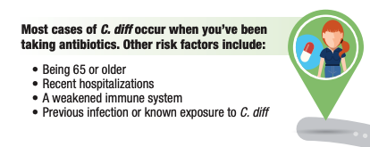 
Fecal microbiota transplant (FMT) can cure most recurrent C. diff
What are the best treatments for recurrent CDI?
…
[FMT] is recommended for patients with multiple recurrences of CDI who have failed appropriate antibiotic treatments…
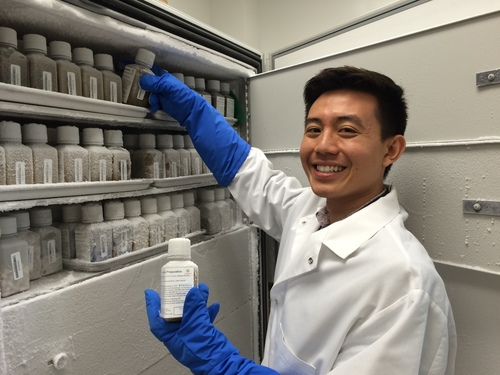
OpenBiome started because a family member couldn’t get FMT
In 2011, a close friend […] contracted a C. difficile infection after a routine surgery, and antibiotic treatment wasn’t working. For 18 months, we watched him suffer with this debilitating illness and several rounds of failed treatment. […] he sought but couldn’t find a clinician who could perform [FMT] for him. When he finally received a [self-administered] life-changing fecal transplant, the effect was remarkable. Within a couple of days he had his life back.
OpenBiome bootstrapped, from humble beginnings
- 2013: Shipped ~100s of treatments using ~1 technician
- 2014: Shipped 1,800 treatments to 170 clinical partners
- 2015: Shipped 7,000 treatments to 520 clinical partners (10% of all recurrent C. diff patients)
- 2016: I graduated from MIT and stopped thinking about OpenBiome
A schematic for microbiome science and practice
Application areas (“R-groups”) in the microbiome
- “Microbiome” means connecting to human host health and host physiology/immunity
- Non-human microbiome means different hosts
- (Old school) microbial ecology means connecting to the environment
- Agriculture means connecting to plant health and physiology
This schema helps visualize different activities in microbiome science
Probiotic therapy

This schema helps visualize different activities in microbiome science
Prebiotic therapy
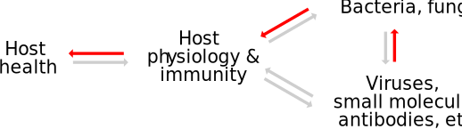
This schema helps visualize different activities in microbiome science
FMT

This schema helps visualize different activities in microbiome science
Diagnostics (e.g., wastewater epidemiology)

Know which way your arrows point to avoid confusion and useless work
- A microbiome diagnostic predicts or classifies disease. But is there an easier source of data?
- A microbiome therapy treats a disease. How could it be tested?
- A search for a microbiome mechanism means you haven’t committed to either direction.
Oil-degrading microbes were unexpected parnters after Deepwater Horizon
- Of spilled Deepwater Horizon oil, humans cleaned up 25% and microbes cleaned up 50%
- Will oil clean up “on its own” when spilled in other places?
- Could we use oil-degrading microbes intentionally?
A simple experiment was designed to identify oil-degrading bacteria

A simple experiment was designed to identify oil-degrading bacteria

16S and simple analytical method identified those oil degraders

Salt is known to affect blood pressure
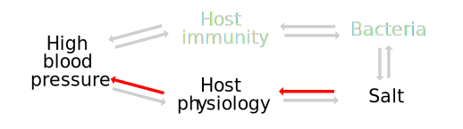
Does salt affect blood pressure via the microbiome?
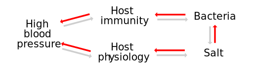
A simple experiment was designed to identify salt-sensitive microbes
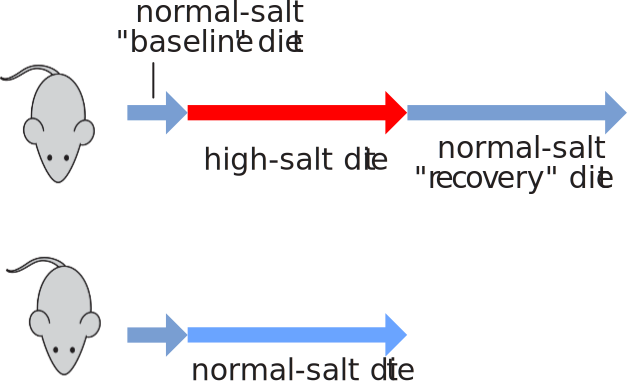
Machine learning identified bacteria that differed between the two diets
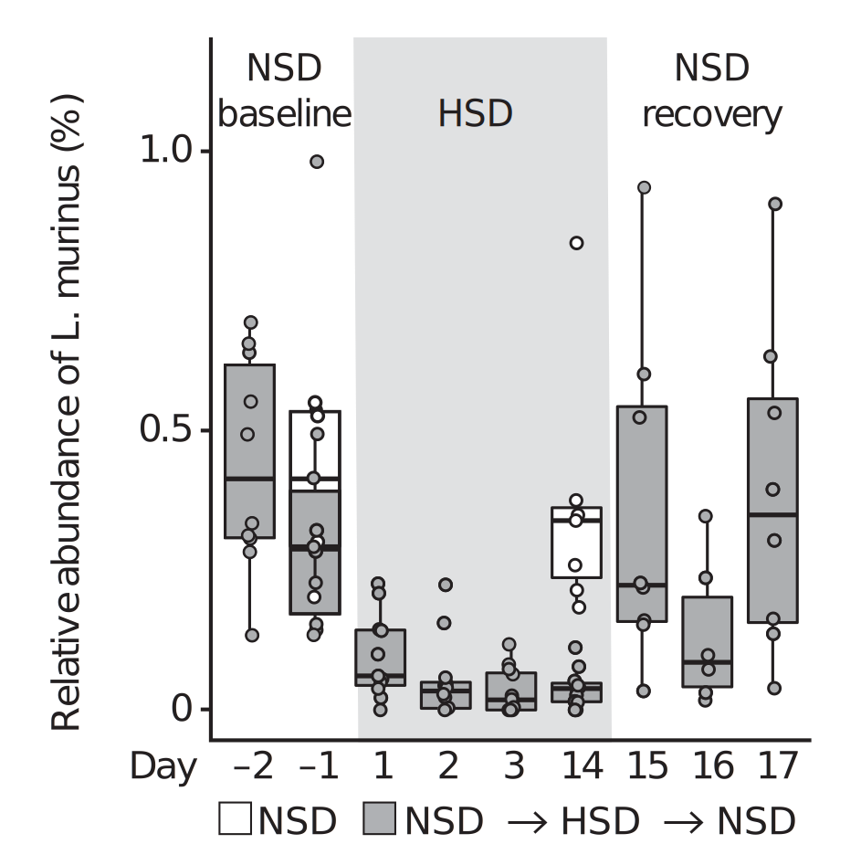
Replacing the missing microbe alleviated salt-induced high blood pressure
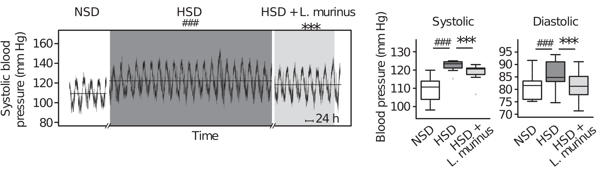
One postdoc (on the epidemiology of AMR) later…

2019 edition
OpenBiome’s main work is supplying FMT material to treat C. diff
- Since founding, we’ve shipped 46,000 treatment units to 1,200 partners
- Reports from our clinical partners report an efficacy of 80–90%, comparable to randomized controlled trials
- Our primary goal is to expand safe access to FMT, so we charge the lowest price we can
FMT for C. diff is in a very unusual regulatory situation
- The FDA regulates FMT as a “biologic product”, i.e., like a drug, not like a transplant
- (Early practitioners changed the name from “fecal bacteriotherapy” to “transplant” hoping to avoid this situation!)
- To use an unapproved drug, a doctor must fill out an investigational new drug (IND) application
- But FMT for recurrent C. diff does not require an IND
We expand safe access to FMT
- Only 3% of people who apply to be stool donors pass the logistical, clinical, and laboratory screens.
- We want to avoid known transmissible diseases (e.g., hepatitis) and possible transmissible diseases (e.g., obesity)
- Of 46,000 treatments, we have had zero reports of serious adverse definitely related to the FMT material itself
Also, we can apply high quality standards

We’re starting to understand some things about the mechanism of FMT

We’re starting to understand some things about the mechanism of FMT

But, FMT’s basic mechanism remains a matter of hypothesis
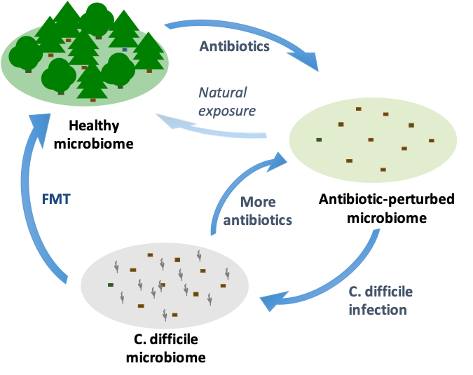
For some, not having the full picture means we should stop doing FMTs
Dr. Jeffrey I. Gordon of Washington University in St. Louis, […] urged caution. He wants to figure out which bacteria are responsible [for FMT-transmissible leanness] so that, eventually, people can be given pure mixtures of bacteria instead of feces. Or, even better, learn what the bacteria produce that induces thinness and give that as a treatment.
And for-profit microbiome companies are filling that gap
[Vedanta drug candidate] VE303 is a rationally-defined bacterial consortium candidate being developed for the prevention of recurrent C. difficile infection.
Compiling data from across clinical trials might give us a better picture

Even without knowing mechanism, we’d rather take the bet
We’d rather put in the haystack (FMT), hoping there’s a needle (the “active ingredient”), rather than wait to find the needle.
What if FMT does work for something else, and we just didn’t try?
Especially because some conditions are unlikely to get for-profit attention

Other conditions won’t get attention until there’s microbiome evidence
- A 6-year old girl got leukemia
- Her leukemia was treated with a bone marrow transplant
- The transplant led her immune system to attack her GI tract (graft-versus-host disease, GvHD)
- After every therapy was exhausted, and this girl was near death, her doctor applied for a single-patient IND
- After FMT, her doctor says it’s hard to believe it’s the same child; her recovery was so complete
Aside: “Sterile fecal filtrate” is my favorite microbiome mystery
We investigated whether sterile fecal filtrates (containing bacterial debris, proteins, antimicrobial compounds, metabolic products, and oligonucleotides/DNA), rather than intact microorganisms, are effective in patients with CDI.
In all 5 patients, [fecal filtrate transfer] restored normal stool habits and eliminated symptoms of CDI for a minimum period of 6 months.
Aside: Donor effects are my second-favorite microbiome mystery
 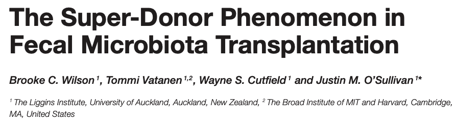 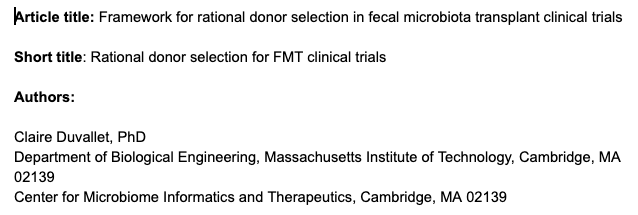
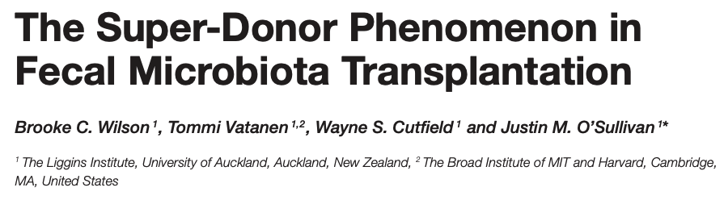 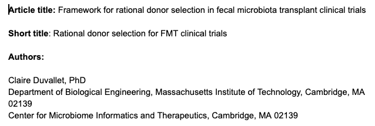


 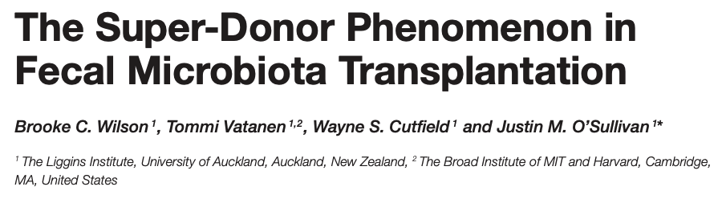 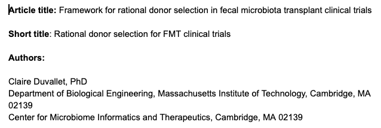
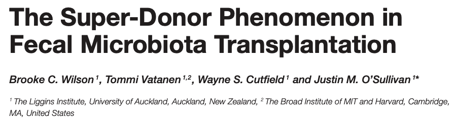 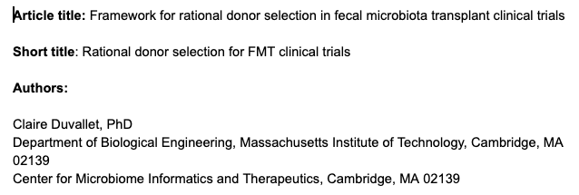